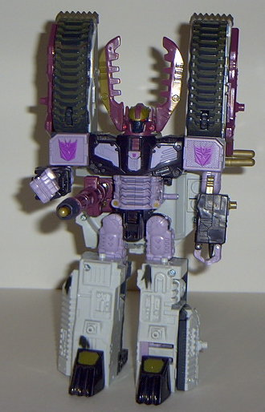

Clench
Clench
Allegiance : Minicon
Size : Mini-Con
Difficulty of Transformation : Very Easy
Color Scheme : Purplish black, maroon, and some bronzish gold, silver, pale white, and bright yellow
Rating : 6.9
(NOTE: Because this is a repaint, this is not a full-blown review. This mainly covers any changes made to the mold and the color scheme, and merely compares it to Megatron w/ Leader-1. For a review on the mold itself, read the review of Megatron w/ Leader-1 here .)
Clench
Allegiance
: Minicon
Size
: Mini-Con
Difficulty of Transformation
: Very
Easy
Color Scheme
: Purplish black, maroon,
and some bronzish gold, silver, pale white, and bright yellow
Rating
: 6.9
The color scheme for
Clench is awesome- I would take absolutely nothing away from it. The purplish
black looks a bit "impure" at first, but it does go together with the maroon
slightly better than just plain black would have. The bronzish gold, silver,
and pale white highlights are also nice contrasts. I especialyl like said
pale white highlight, since there's not too much of it and it exemplifies
the Minicon insignia on Clench's chest. Clench could have used maybe a
bit of detailing on his legs in robot mode, but that's really about all
I can think of.
No mold changes have
been made to Clench.
Clench is quite a bit
improvement over Leader-1's color scheme, and is honestly as about as good
as I think this toy can get. Pret-ty nice.
 Galvatron
Galvatron

Allegiance
: Decepticon
Size
: Giga-Con
Difficulty of Transformation
: Medium
Color Scheme
: White-gray, maroon,
purplish black, lavender, bronzish gold, and some black, clear plastic,
bright yellow, purplish pink, charcoal black, and dull muddy green-brown
Powerlinx ports
: 14 (3 gimmicked)
Rating
: 8.6
Galvatron's new color
scheme has two sides to it. From one side, I do like the more liberal use
of black than he had the last time. And it fits just perfectly with the
maroon and bronzish gold. I especially love the face- a eviller-looking
Decepticon leader there isn't.
However, the overusage of that lavenderish
pink in robot mode really makes Galvatron's color scheme a bit too pink
and "girly". It's not as apparent in the tank mode, although the tank mode
has its own problems; although the "mud" wash on the treads and the charred
black spots on the hull are really great touches, they take away larger
paint apps from the top of the tank, thus making it look just mostly plain
white. I would rather have had the silver-painted panels from Armada Megatron's
tank mode, thanks. The Decepticon symbols on Galvatron in robot mode are
also very pink in their coloration... what happened to the purple Decepticon
symbols?
Overall, I'd have to
say that Megatron wins out over Galvatron in this case, although the mold
itself is pretty darn good. Galvatron just has a bit too "girly" of a look
to his coloration in robot mode and has too much white on him in vehicle
mode for him to triumph over his predecessor color-wise.
Review by Beastbot